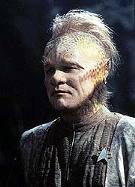
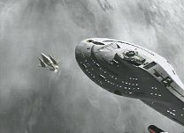
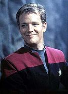
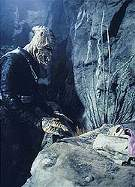
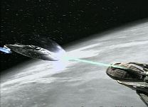
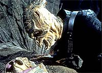

|
MANCHETE
DO EPISDIO
Histria voltada para personagens
explora continuidade na srie
Episdio
anterior | Prximo
episdio
Sinopse:
Data Estelar: 49068.5.
 Quando
Kes pede a Tom Paris que seja seu instrutor de vo, ele descobre
que est apaixonado por ela. O ciumento Neelix toma conhecimento
desse interesse e briga com Tom na frente da tripulao.
Intencionalmente ou no, Janeway envia ambos em uma misso para
coletar suprimentos para a Voyager. A opo mais prxima um
planeta envolvido por vapores trigmicos, que podem causar severas
irritaes na pele. Chakotay o apelida de "Planeta
Inferno".
medida que se aproximam do planeta, turbulncias eletromagnticas
na atmosfera fazem a nave auxiliar perder potncia e foram um
pouso de emergncia na superfcie. Na Voyager, os colegas vem o
problema e enviam uma misso de busca e resgate.
A fim de evitar a exposio aos vapores, Neelix e Paris buscam refgio
em uma caverna e fecham sua abertura. Na nave, os esforos de busca
so interrompidos pelo ataque de uma nave de origem desconhecida. A
tripulao, entretanto, consegue prosseguir para a atmosfera.
 Na
caverna, Paris e Neelix exploram o ambiente cuidadosamente. Eles
encontram pegadas direcionadas a um nicho com ovos. Enquanto
observam, uma criatura rptil humanide choca de um deles. Neelix
decide que responsabilidade deles cuidar do ser, j que a me no
est vista. O corao da criatura comea a enfraquecer e
Paris descobre que celando a caverna eles cortaram o suprimento de
vapores que o beb precisa para sobreviver.
Os dois ento reabrem a entrada e o levam para fora. Entretanto,
surge um problema: a nave aliengena demonstra forte interesse pelo
recm-nascido e a presena dos tripulantes da Voyager causa grande
irritabilidade. Por fim, eles esperam escondidos que o aliengena
leve sua cria, enquanto a Voyager desenvolve um meio de transport-los
da superfcie.
Comentrios:
 Diferente
da maioria dos episdios de Voyager, "Parturition"
aprofunda-se no desenvolvimento das personagens. Quem sai lucrando
com isso dessa vez principalmente Neelix, que foi negligenciado
durante praticamente todo o seriado. Ao invs de batalhas espaciais
recheadas de efeitos cinematogrficos, h conflitos pessoais --que
no deixam nada a desejar.
A aposta rendeu bons frutos. Apesar de um episdio simples e sem
reviravoltas, o entretenimento garantido. As interaes entre
Neelix e Paris funcionam perfeitamente, assim como a j costumeira
amizade entre Kes e o Doutor.
Outro destaque incomum vai para uma coisa que Voyager no
costuma ter: continuidade. Um dos principais motivos pelos quais a srie
no cativou os fs das outras verses de Jornada foi a falta de
encadeamento entre as histrias. Aqui, temos a resoluo de uma
problemtica proposta anteriormente ("Elogium").
Em geral, nesta srie, cada episdio independente dos outros e
seu contedo nunca mais aproveitado.
 Outro
ponto positivo foi a maquiagem dos aliengenas introduzidos no
roteiro. Os seres meio rpteis, meio humanides diferem dos
tradicionais humanides, com orelhas mais acentuadas ou testas
salientes.
Porm, nem tudo so flores para o episdio. Embora invista nos
personagens, no se pode dizer que eles so tratados de maneira
realista. Se esse aspecto fosse levado em conta, Neelix pularia no
pescoo de Paris ao saber que ele de fato gostava de Kes e no
terminaria naquele jeito simptico que terminou.
A opo dos roteiristas foi aplicar uma ligeira forada de barra,
s para manter o esprito familiar entre os personagens. Atitude
compreensvel, mas questionvel.
Aqui Paris comea a mostrar sinais de mudana em sua personalidade
desde que chegou Voyager. Fica claro neste episdio que o
personagem agora busca redeno, crescimento e respeito dos
colegas. Nenhum desses sentimentos fazia parte dele no incio da srie.
E essa mudana no agradou a todos.
 No
piloto, quem mais se destacou foi mesmo Paris, com aquela figura
sarcstica, irnica e at agressiva. Durante toda a primeira
temporada de Voyager ele manteve esse comportamento. Mas,
medida que o segundo ano comeou, os produtores passaram a investir
no esteritipo "oficial da Frota Estelar" e ningum se
salvou. At os maquis Chakotay e B'Elanna perderam sua identidade
e, para quem no assistiu aos primeiros episdios, eles passam
tranqilamente por membros da Federao.
Mais adiante na segunda temporada, Paris volta a apresentar aquele
comportamento original, mas, novamente, os roteiristas voltaram a
inibir o lado "fora-da-lei" da personagem.
 Tambm
pode-se dizer que o episdio no leva a Voyager a lugar algum.
Durante a histria, Neelix e Paris parecem ter chegado a um novo
passo na amizade, mas nos prximos episdios tudo fica na mesma,
como se nada tivesse acontecido.
Janeway aparece com um novo penteado, cabelos curtos, que
subitamente, no episdio seguinte, voltam maiores do que eram antes
da mudana, e os aliengenas do dia nunca mais sero vistos. Ou
seja, se Voyager teve um "surto" de continuidade, o
staff da srie logo tomou um chazinho e voltou a seu estado
habitual.
De qualquer modo, "Parturitions" atinge suas metas,
tornando-se um dos episdios divertidos desta escassa segunda
temporada.
Citaes:
Neelix - "I had no right
to push that pasta into your lap."
("Eu no tinha direito de jogar aquela pasta em voc.")
Paris - "Well, look at it this way, saved me from having to
eat it."
("Bem, olhe pelo lado bom, pelo menos voc me salvou de ter de
com-la.")
Trivia:
 Este episdio, mais um dirigido por Jonathan Frakes (William T.
Riker), havia sido originalmente chamado de "The Fog",
antes de ganhar seu nome final.
Este episdio, mais um dirigido por Jonathan Frakes (William T.
Riker), havia sido originalmente chamado de "The Fog",
antes de ganhar seu nome final.
Neste episdio ocorre pela primeira vez a
destruio de uma das naves auxiliares de Voyager. Ocorrncias
como essa acabaram se tornando um dos maiores problemas de
continuidade da srie: as naves auxiliares no acabavam nunca,
embora fossem destrudas continuamente durante a srie e no
pudessem ser substitudas por outras em razo do isolamento da
Voyager no quadrante Delta.
Aqui h uma boa chance de ver a capit Janeway
com um novo penteado. Os trabalhados modelos de penteado de Voyager
garantiram srie vrios prmios Emmy na categoria. O cabelo da
capit s iria se "estabilizar" na quarta temporada
Ficha
tcnica:
Escrito por Tom Szollosi
Direo de Jonathan Frakes
Exibido em 09/10/1995
Produo: 023
Elenco:
Kate Mulgrew como
Kathryn Janeway
Robert Beltran como Chakotay
Roxann Biggs-Dawson como B'Elanna Torres
Robert Duncan McNeill como Tom Paris
Jennifer Lien como Kes
Ethan Phillips como Neelix
Robert Picardo como Doutor
Tim Russ como Tuvok
Garrett Wang como Harry Kim
Elenco convidado:
George Spelvin como Gleknar
Episdio
anterior | Prximo
episdio
|